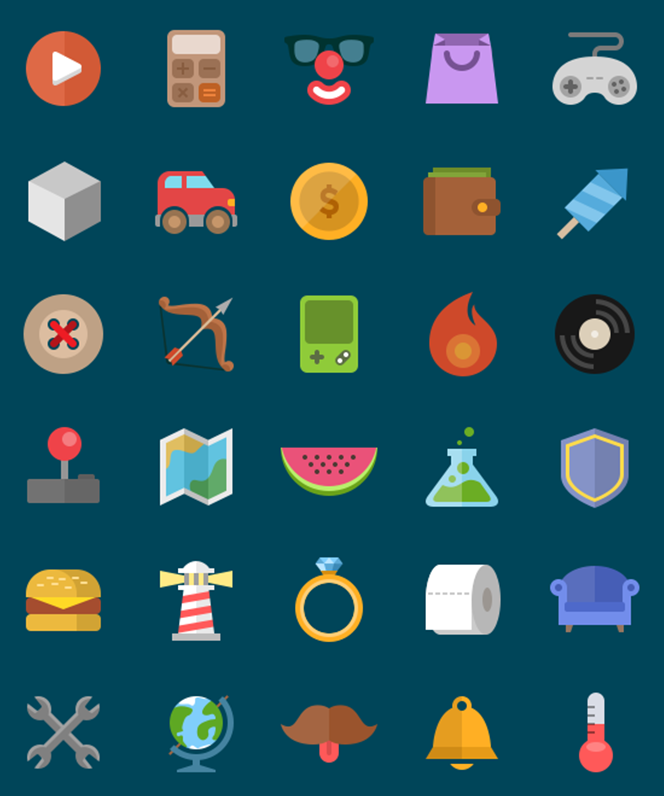

图标设计

虽然学习过三年的PS，但是感觉自己对设计的认识还仅仅只是停留在软件的使用层面，每当自己要着手设计的时候，总感觉无从下手。非常感谢讯科教育为我们提供的项目实训，让我对UI有的更深刻的认识，同时掌握了许多设计技巧。讯科教育的设计师让我感触最深的一点就是，他们给我们带来的不仅仅只是软件的操作方式，更多的是设计技巧，设计思路，设计理念，让我们对UI设计能做到举一反三。
学员感悟
虽然学习过三年的PS，但是感觉自己对设计的认识还仅仅只是停留在软件的使用层面，每当自己要着手设计的时候，总感觉无从下手。非常感谢讯科教育为我们提供的项目实训，让我对UI有的更深刻的认识，同时掌握了许多设计技巧。讯科教育的设计师让我感触最深的一点就是，他们给我们带来的不仅仅只是软件的操作方式，更多的是设计技巧，设计思路，设计理念，让我们对UI设计能做到举一反三。